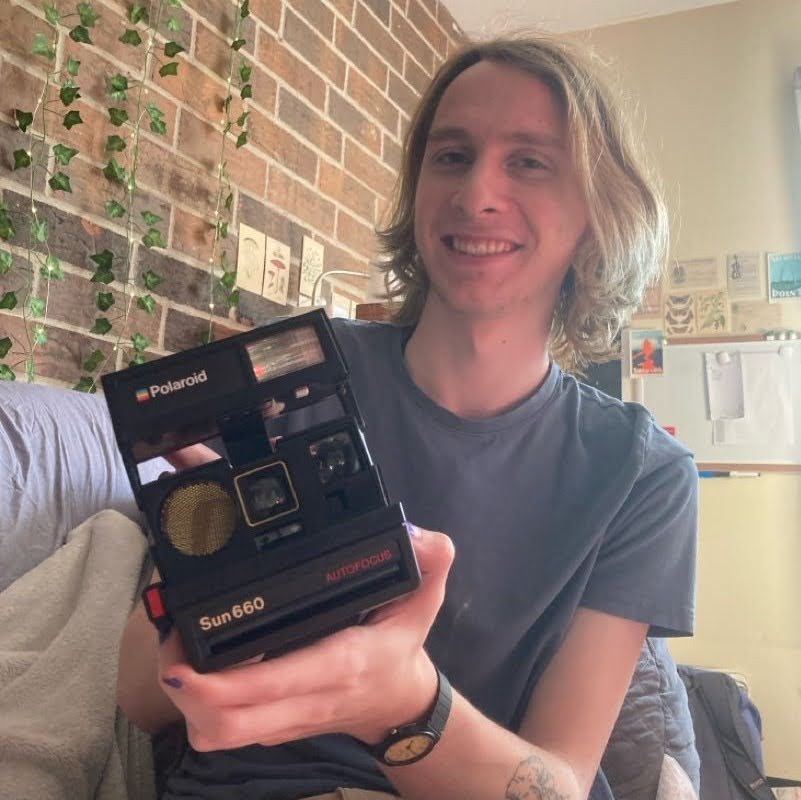

Hello! I'm Alec and I enjoy writing software. I specialize in VR game development and engineering, but also have experience in web development, low-level engine development, app development, and more. When I'm not writing software I enjoy fishkeeping and learning new things. I recently graduated from Bradley University with a Bachelors in Computer Science and a minor in Game Design. I am currently working for Quantum Lion Labs.
View my resume
This is my third or fourth personal website/portfolio. The first one was built off of a template and looked very beginner. The next iteration looked a little better, but did not feel very "me", and ran poorly. The previous iteration had a Y2K aesthetic, but tried to cram too much information into one page and was not responsive. This current website is designed to be simple and fast. Modern websites either have too much going on, take too long to load, or both. This website has really simple CSS, looks good, and is really small. The largest part of this website are the portfolio images. No frameworks were used, just plain HTML and CSS.